뉴럴 네트워크가 경사 하강 알고리즘gradient descent algorithm을 이용해, 어떻게 가중치와 편향을 학습하는지 1장에서 살펴보았다. 하지만 설명하지 않은 부분이 있다: 비용 함수의 그래디언트gradient를 계산하는 방법에 대해서는 다루지 않았다. 2장에서는 그래디언트gradient를 빠르게 계산하는 알고리즘인 역전파 backpropagation 알고리즘을 공부한다.
역전파 알고리즘은 1970년대 처음으로 소개되었지만, 데이빗 루멜하트 David Runelhart, 제프리 힌턴 Geoffrey Hinton, 로날드 윌리엄스 Ronald Williams의 1985년 논문이 발표되기 전까지 중요하게 여겨지지 않았다. 이 논문에서는 이전의 학습 방식보다 역전파 알고리즘이 훨씬 빠르게 동작하는 몇 가지 뉴럴 네트워크를 도입했다. 덕분에 이전에는 풀 수 없었던 문제를 뉴럴 네트워크를 사용하여 풀 수 있게 되었다. 현재, 뉴럴 네트워크를 학습시킬 때 역전파 알고리즘은 중요한 역할을 하고 있다.
2장은 책의 다른 부분보다 수학적인 내용을 많이 담고 있다. 수학을 싫어한다면, 2장을 건너뛰고 싶을 수도 있다. 시간을 내서 이 부분을 공부해야하는 이유는 무엇일까?
물론, 역전파 알고리즘을 이해하기 위해서 이 부분을 공부해야 한다. 뉴럴 네트워크의 어떤 가중치 $w$(또는 편향 $b$)에 대한 비용 함수 $C$의 편도함수 $\partial C / \partial w$은 역전파 알고리즘의 핵심 부분이다. 이 수식을 통해, 가중치와 편향이 변할 때 비용 함수가 얼마나 빨리 바뀌는지 알 수 있다. 수식이 다소 복잡하지만, 자연스럽고 직관적인 해석을 가지는 수식의 아름다움도 볼 수 있다. 그래서 역전파 알고리즘은 단지 학습을 위한 빠른 알고리즘만을 의미하는 것이 아니라, 가중치와 편향이 변할 때 뉴럴 네트워크가 전체적으로 어떻게 변하는지에 대한 통찰력을 길러 준다. 그러므로 역전파 알고리즘을 자세히 공부해야 한다.
그래도 2장을 건너 뛰고, 다음 장으로 바로 넘어가도 괜찮다. 역전파 알고리즘을 모른채 넘어가도 다른 내용을 이해할 수 있도록 책을 구성했다. 물론 책의 뒷부분에서 2장의 결과를 언급하는 경우가 있으므로, 모든 추론 과정을 따라가지는 않더라도 중요한 결론은 이해할 수 있어야 한다.
역전파 알고리즘을 알아보기 전에, 뉴럴 네트워크의 출력을 계산하는 빠른 행렬 기반 알고리즘a fast matrix-based approach을 살펴보자. 1장의 끝 부분에서 이 알고리즘을 간단히 살펴보았지만, 다시 한번 자세히 살펴볼 필요가 있다. 실제로 이를 통해 역전파 알고리즘에서 사용하는 표기법에 익숙해질 수 있다.
뉴럴 네트워크에서 가중치를 표기하는 방법을 분명히 해보자.
$w^l_{jk}$은 $(l-1)$번째 층의 $k$번째 뉴런과 $l$번째 층의 $j$번째 뉴런을 연결하는 가중치를 나타낸다.
예를 들어 아래의 그림은 두 번째 층의 네 번째 뉴런과 세 번째 층의 두 번째 뉴런을 연결하는 가중치를 표시하고 있다.
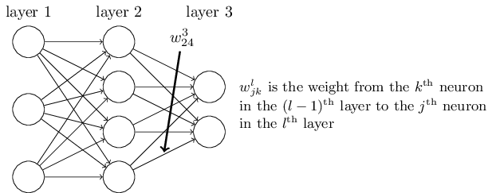
이 표기법을 처음 접한다면 익숙해지는데 시간이 오래 걸릴 수 있다.
하지만 조금만 노력하면, 표기법이 자연스럽고 간단하다는 것을 알 수 있다.
표기법 중에서 이상한 점 한 가지는 $j$와 $k$의 순서이다.
$j$가 입력 뉴런을 나타내고, $k$가 출력 뉴런을 나타내는 것이 더 자연스럽다고 느낄 수 있다.
아래에서 이러한 순서를 사용하는 이유를 알아볼 것이다.
뉴럴 네트워크의 편향과 활성화activation에도 비슷한 표기법을 사용한다.
$b^l_j$은 $l$번째 층에 있는 $j$번째 뉴런의 편향을 나타낸다.
$a^l_j$은 $l$번째 층에 있는 $j$번째 뉴런의 활성화를 의미한다.
아래의 그림은 실제로 사용하는 표기법의 한 예를 보여준다.
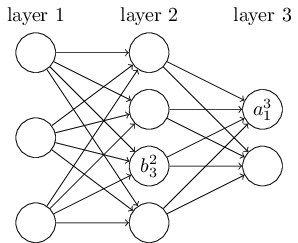
이러한 표기법을 이용하면 $l$번째 층에 있는 $j$번째 뉴런의 활성화 $a^{l}_j$와 $(l - 1)$번째 층의 활성화를 연관지을 수 있다.
다음 식을 보자.(식
(4)
$$\begin{eqnarray}
\frac{1}{1+\exp(-\sum_j w_j x_j-b)} \nonumber\end{eqnarray}$$
와 마지막 장에 있는 토론 부분을 비교해 보자)
$$\begin{eqnarray}
a^{l}_j = \sigma\left( \sum_k w^{l}_{jk} a^{l-1}_k + b^l_j \right),
\tag{23}\end{eqnarray}$$
여기서 시그마$\Sigma$는 $(l - 1)$번째 층에 있는 모든 뉴런 $k$에 대한 합이다.
각 층 $l$에 대한 가중치 행렬 weight matirx $w^l$을 정의하여, 이 식을 행렬 형태로 다시 쓸 수 있다.
가중치 행렬 $w^l$의 각 원소는 단지 $l$번째 층에 있는 뉴런으로 연결되는 가중치다.
즉 $j$열, $k$행에 있는 원소는 $w^l_{jk}$이다.
비슷한 방법으로 각 층 $l$에 대한 편향 벡터 $b^l$을 정의해보자.
편향 벡터의 각 원소는 $b^l_j$이며, $l$번째 층에 있는 각 뉴런에 대한 값이다.
마지막으로 각 성분이 활성화 $a^l_j$인 활성화 벡터 $a^l$을 정의한다.
마지막으로 $\sigma$와 같은 함수를 벡터화vectorizing하여, 식 (23) $$\begin{eqnarray} a^{l}_j = \sigma\left( \sum_k w^{l}_{jk} a^{l-1}_k + b^l_j \right) \nonumber\end{eqnarray}$$ 을 행렬 형태로 바꾼다. 벡터화는 1장에서 잠깐 다루었다. 다시 한번 간단하게 이야기하면, 벡터화의 기본적인 아이디어는 벡터 $v$의 모든 원소에 $\sigma$와 같은 함수를 적용하는 것이다. 표기법 $\sigma(v)$은 각 원소마다 함수를 적용한다는 의미이다. 즉 $\sigma(v)$의 원소는 단지 $\sigma(v)_j = \sigma(v_j)$을 나타낸다. 예를 들어 함수 $f(x) = x^2$을 벡터화된 형태vectorized form는 다음과 같다. $$\begin{eqnarray} f\left(\left[ \begin{array}{c} 2 \\ 3 \end{array} \right] \right) = \left[ \begin{array}{c} f(2) \\ f(3) \end{array} \right] = \left[ \begin{array}{c} 4 \\ 9 \end{array} \right], \tag{24}\end{eqnarray}$$ 즉 함수 $f$의 벡터화는 벡터의 모든 원소를 제곱한다.
이 표기법을 이용해 식 (23) $$\begin{eqnarray} a^{l}_j = \sigma\left( \sum_k w^{l}_{jk} a^{l-1}_k + b^l_j \right) \nonumber\end{eqnarray}$$ 을 다음과 같이 쓸 수 있다. $$\begin{eqnarray} a^{l} = \sigma(w^l a^{l-1}+b^l). \tag{25}\end{eqnarray}$$ 위 식을 통해, 어떤 층의 활성화가 이전 층의 활성화와 어떻게 연관되는지 폭넓게 이해할 수 있다: 단지 활성화에 가중치 행렬을 곱한 다음, 편향 벡터를 더하고 함수 $\sigma$를 적용한다. 이러한 관점은 이제까지 봐왔던 뉴런 단위의 시각보다 더 쉽고 간결하다.(적은 인덱스를 포함한다) 이 방법으로 생각하면 무엇이 일어나는지 정확히 알 수 있으며, 인덱스를 복잡하게 사용하지 않아도 된다. 대부분의 행렬 라이브러리에서 제공하는 행렬 곱, 벡터 덧셈, 벡터화vectorization는 충분히 빠르기 때문에 위 식은 실제로 유용하다. 1장에서 살펴본 코드에서 뉴럴 네트워크의 행동을 계산하기 위해 이 식을 암묵적으로 사용했다.
$a^l$을 계산하기 위해 식 (25) $$\begin{eqnarray} a^{l} = \sigma(w^l a^{l-1}+b^l) \nonumber\end{eqnarray}$$ 를 사용하는 과정에서 $z^l \equiv w^l a^{l-1}+b^l$을 계산한다. 이 값 $z^l$을 $l$층에 있는 뉴런에 대한 가중치 입력 weighted input이라 한다. 2장의 뒷 부분에서 가중치 입력weighted input $z^l$을 많이 사용할 것이다. 식 (25) $$\begin{eqnarray} a^{l} = \sigma(w^l a^{l-1}+b^l) \nonumber\end{eqnarray}$$ 을 가중치 입력 항에 대해 $a^l = \sigma(z^l)$과 같이 쓰는 경우도 있다. 여기서 $z^l$은 $z^l_j = \sum_k w^l_{jk} a^{l-1}_k+b^l_j$을 원소로 가지며, $z^l_j$은 $l$층에 있는 뉴런 $j$에 대한 활성화 함수activation function의 가중치 입력이라는 점을 기억해두자.
역전파 알고리즘의 목표는 뉴럴 네트워크에서 가중치 $w$와 편향 $b$에 대한 비용 함수 $C$의 편도함수 $\partial C / \partial w$와 $\partial C / \partial b$를 계산하는 것이다. 역전파 알고리즘이 동작하려면, 비용 함수 식에 대해 두 가지 가정을 해야한다. 먼저 가정을 하기 전에 비용 함수의 구체적인 예를 살펴보자. 1장에서 살펴본 이차 비용 함수를 생각해보자.(식 (6) $$\begin{eqnarray} C(w,b) \equiv \frac{1}{2n} \sum_x \| y(x) - a\|^2 \nonumber\end{eqnarray}$$ 을 참고하자) 이차 비용 함수는 이전 절의 표기법을 이용해 다음과 같이 쓸 수 있다. $$\begin{eqnarray} C = \frac{1}{2n} \sum_x \|y(x)-a^L(x)\|^2, \tag{26}\end{eqnarray}$$ 여기서 $n$은 전체 학습 데이터의 개수이고, 시그마$\Sigma$는 개별 학습 데이터 대한 $x$에 대한 합이다. $y = y(x)$는 원하는 출력desired output이다. $L$은 뉴럴 네트워크에서 층의 개수를 나타내고, $a^L = a^L(x)$은 입력이 $x$일 때 뉴럴 네트워크에서 출력되는 활성화의 벡터이다.
자, 이제 역전파 알고리즘을 적용하기 위해 비용 함수 $C$에 어떤 가정을 해야할까? 첫 번째는 비용 함수 $C$를 개별 학습 데이터 $x$에 대한 비용 함수 $C_x$의 평균 $C = \frac{1}{n} \sum_x C_x$로 나타낼 수 있다는 가정이다. 이는 이차 비용 함수인 경우에 대한 가정이고, 여기서 개별 학습 데이터에 대한 비용 $C_x = \frac{1}{2} \|y-a^L \|^2$이다. 이 가정은 책에서 보게 될 다른 비용 함수에 대해서도 성립한다.
사실 역전파 알고리즘은 개별 학습 데이터에 대한 편도함수 $\partial C_x / \partial w$과 $\partial C_x / \partial b$을 계산하기 때문에 이러한 가정이 필요하다. 그러므로 학습 데이터에 대한 평균을 이용해 $\partial C / \partial w$과 $\partial C / \partial b$을 계산한다. 학습 데이터 $x$는 고정된 값이라 가정하하여 비용 $C_x$에서 $x$를 제거해 $C$로 쓸 것이다. 결국 뒤에서 $x$를 다시 표시하지만, 당분간은 이를 생략하여 표기를 단순하게 한다.
비용 함수에 대한 두 번째 가정은 비용 함수를 뉴럴 네트워크의 출력에 대한 함수로 쓸 수 있다는 것이다.
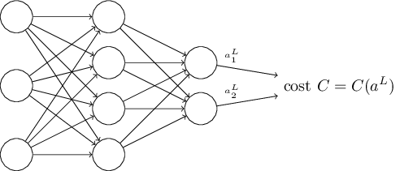
예를 들어 개별 학습 데이터 $x$에 대한 이차 비용 함수를 다음과 같이 쓸 수 있으므로 이차 비용 함수는 이 조건을 만족한다.
$$\begin{eqnarray}
C = \frac{1}{2} \|y-a^L\|^2 = \frac{1}{2} \sum_j (y_j-a^L_j)^2,
\tag{27}\end{eqnarray}$$
그러므로 이차 비용 함수는 출력 활성화에 대한 함수a function of the output activation이다.
물론 이 비용 함수는 원하는 출력 $y$에 의존하므로, 왜 비용 함수를 $y$에 대한 함수로 쓰지 않는지 궁금할 것이다.
입력 학습 데이터 $x$는 고정된 값이므로 출력 $y$ 또한 고정된 매개변수이다.
특히 가중치와 편향을 바꾸면서 수정할 수 있는 값이 아니다.
즉 뉴럴 네트워크가 학습하는 값이 아니다.
그러므로 비용 함수 $C$를 출력 활성화 $a^L$에 대한 함수로 생각하고, $y$를 단지 함수를 정의하는데 도움을 주는 매개변수로 생각하면 된다.
역전파 알고리즘은 벡터 덧셈, 벡터와 행렬 곱셈 등과 같은 일반적인 선형대수 연산을 기반이으로 한다. 그리고 잘 알려지지 않은 연산 하나를 사용한다. 먼저, 차원이 같은 두 벡터 $s$와 $t$를 가정해보자. 그러면 $s \odot t$은 원소 단위 곱elementwise product을 의미한다. 그러므로 $s \odot t$의 원소는 단지 $(s \odot t)_j = s_j t_j$이다. 예를 들면 아래와 같다. $$\begin{eqnarray} \left[\begin{array}{c} 1 \\ 2 \end{array}\right] \odot \left[\begin{array}{c} 3 \\ 4\end{array} \right] = \left[ \begin{array}{c} 1 * 3 \\ 2 * 4 \end{array} \right] = \left[ \begin{array}{c} 3 \\ 8 \end{array} \right]. \tag{28}\end{eqnarray}$$ 이러한 종류의 원소 단위 곱셈을 아다마르 곱 Hadamard product 또는 슈어 곱 Schur product이라 한다. 책에서는 이를 아다마르 곱이라 하겠다. 좋은 행렬 라이브러리는 아마다르 곱의 구현을 제공하고 있으며, 이를 이용해 역전파 알고리즘을 편리하게 구현할 수 있다.
역전파backpropagation는 네트워크에서 가중치와 편향이 바뀔 때 비용 함수가 어떻게 바뀌는지 이해하는 것이다. 궁극적으로 편도함수 $\partial C / \partial w^l_{jk}$과 $\partial C / \partial b^l_j$ 계산을 의미한다. 이를 계산하기 위해 먼저 $l$번째 층에 있는 $j$번째 뉴런에서의 오차 error $\delta^l_j$를 도입하자. 역전파 알고리즘을 통해 오차 $\delta^l_j$를 계산한 다음, $\partial C / \partial w^l_{jk}$과 $\partial C / \partial b^l_j$을 $\delta^l_j$과 연관지을 것이다.
어떻게 오차를 정의하는지 이해하기 위해, 아래와 같이 뉴럴 네트워크에 악마가 있다고 생각해보자.
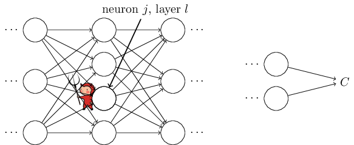
악마는 $l$번째 층에 있는 $j$번째 뉴런에 있다.
이 뉴런에 입력이 들어오면 악마는 뉴런의 연산을 방해한다.
이는 뉴런의 가중치 입력weighted input에 아주 작은 변화 $\Delta z^l_j$를 가하고, $\sigma(z^l_j)$을 출력하는 대신에 뉴런은 $\sigma(z^l_j+\Delta z^l_j)$을 출력한다.
이 변화는 뉴럴 네트워크에서 뒤이어 나오는 층에 전파되어propagate 전체 비용을 $\frac{\partial C}{\partial z^l_j} \Delta z^l_j$만큼 변화시킨다.
이제, 이 악마는 착한 악마가 되어 비용을 개선시키는데 도움을 주려 한다.
즉 악마는 비용을 더 작게 만드는 $\Delta z^l_j$을 찾으려 한다.
$\frac{\partial C}{\partial z^l_j}$가 큰 값을 가진다고 가정하자.(양수든 음수든 상관없다)
그러면 악마는 $\frac{\partial C}{\partial z^l_j}$와 다른 부호를 가지는 $\Delta z^l_j$을 선택해 비용을 조금씩 낮출 수 있다.
그에 반해, $\frac{\partial C}{\partial z^l_j}$이 0에 가까우면 악마는 가중치 입력 $z^l_j$을 바꿔서 비용을 개선시킬 수 없다.
악마가 알 수 있는 한, 뉴런은 이미 거의 최적에 가까운 것이다.*
물론 이는 아주 작은 변화 $\Delta z^l_j$인 경우에만 해당한다.
악마가 그러한 작은 변화만 만든다고 가정한다.
그러므로 $\frac{\partial C}{\partial z^l_j}$이 뉴런에서 오차의 척도라 할 수 있다.
이 이야기에 따라, $l$번째 층에 있는 뉴런 $j$의 오차 $\delta^l_j$를 다음과 같이 정의한다. $$\begin{eqnarray} \delta^l_j \equiv \frac{\partial C}{\partial z^l_j}. \tag{29}\end{eqnarray}$$ 여기서 $\delta^l$은 $l$번째 층과 관련된 오차의 벡터를 나타낸다. 역전파를 통해 모든 층에 대한 $\delta^l$을 계산할 수 있으며, 이를 이용해 실제로 구하고자 하는 값 $\partial C / \partial w^l_{jk}$과 $\partial C / \partial b^l_j$을 오차와 연관짓는다.
왜 악마가 가중치 입력 $z^l_j$을 바꾸는지 궁금할지도 모른다.
악마가 출력 활성화output activation $a^l_j$을 바꿔 그 결과 $\frac{\partial C}{\partial a^l_j}$을 오차의 척도로 사용하는 것이 더 자연스러울 생각일 수도 있다.
사실 이렇게 하면, 아래에서 살펴볼 토의 내용과 비슷하게 동작한다.
하지만 이는 역전파를 수학적으로 복잡하게 만든다.
그래서 $\delta^l_j = \frac{\partial C}{\partial z^l_j}$을 오차의 척도로 본다.
*
MNIST 같은 분류 문제에서 "오차"는 분류 실패율을 의미하기도 한다.
예를 들어 뉴럴 네트워크이 96.0%의 정확도로 숫자를 분류하면
오차는 4.0%이다.
물론 이는 $\delta$ 벡터의 의미와 다르다.
실제로 단어가 어떤 의미로 사용되었는지 헷갈리면 안된다.
공격 계획Plan of attack: 역전파는 네 개의 핵심 식을 기본으로 한다. 이 식을 통해, 오차 $\delta^l$과 비용 함수의 그래디언트gradient를 모두 계산할 수 있다. 아래에서 네 가지 식을 살펴볼 것이다. 네 개의 식을 동시에 모두 완전히 이해할 것이라 기대하지는 말자. 완전히 이해하려 하다가 큰 좌절을 할 수 있다. 사실 역전파 식을 깊이 있게 이해하려면 상당한 시간과 인내가 필요하다. 인내를 많이 할수록 그에 따라 많은 부분을 이해할 수 있을 것이다. 그러므로 이번 절에서 살펴볼 토의 내용은 식을 완전히 이해하기 위한 시작에 불과하다.
이 장의 뒷부분에서 식을 더 깊이있게 이해하기 위해 다음과 같은 방식을 사용한다: 식을 짧게 증명하여 식이 성립하는 이유를 설명할 것이다; 의사코드pseudo code를 이용해 식을 알고리즘 형태로 써보고, 파이썬 코드로 의사코드를 어떻게 구현할 수 있는지 살펴볼 것이다; 그리고 이 장의 마지막 절에서 역전파 식이 무엇을 의미하는지, 그리고 처음에 어떻게 역전파를 발견했는지 직관적인 방식으로 이해해볼 것이다. 이를 설명하는 중간에 네 가지 핵심 식을 반복해서 살펴볼 것이다. 그리고 깊이 이해할수록 이 식에 익숙해질 것이며, 심지어 아름답고 자연스럽게까지 느껴질 것이다.
출력 층에서 오차에 대한 식, $\delta^L$ An equation for the error in the output layer: $\delta^L$의 원소는 다음과 같다. $$\begin{eqnarray} \delta^L_j = \frac{\partial C}{\partial a^L_j} \sigma'(z^L_j). \tag{BP1}\end{eqnarray}$$ 이는 아주 당연한 식이다. 우변의 첫번째 항 $\partial C / \partial a^L_j$은 $j$번째 출력 활성화에 대한 함수이며, 단지 비용이 얼마나 빠르게 변하는지 측정한다. 예를 들어 $C$가 특정한 출력 뉴런 $j$에 상관 없으면, $\delta^L_j$은 작은 값을 가진다. 우변의 두번째 항 $\sigma'(z^L_j)$은 $z^L_j$에서 활성화 함수 $\sigma$가 얼마나 빠르게 변하는지 측정한다.
(BP1) $\begin{eqnarray} \delta^L_j = \frac{\partial C}{\partial a^L_j} \sigma'(z^L_j) \nonumber\end{eqnarray}$ 에 있는 모든 값은 쉽게 계산할 수 있다. 특히 뉴럴 네트워크의 행동을 계산하는 동안 $z^L_j$을 계산하며, $\sigma'(z^L_j)$를 계산하기 위한 추가적인 오버헤드overhead는 단지 조금만 있으면 된다. 물론 $\partial C / \partial a^L_j$의 정확한 항은 비용 함수에 따라 달라진다. 그러나 비용 함수가 주어지면 $\partial C / \partial a^L_j$을 계산하는데 큰 어려움은 없다. 예를 들어 이차 비용 함수를 사용하면 $C = \frac{1}{2} \sum_j (y_j-a^L_j)^2$이므로, $\partial C / \partial a^L_j = (a_j^L-y_j)$은 쉽게 계산할 수 있다.
식 (BP1) $\begin{eqnarray} \delta^L_j = \frac{\partial C}{\partial a^L_j} \sigma'(z^L_j) \nonumber\end{eqnarray}$ 은 $\delta^L$에 대한 원소별 식componentwise expression이다. 이는 완벽하게 좋은 식이지만, 역전파에서 필요한 행렬기반의 식matrix-based form이 아니다. 하지만 이 식을 행렬기반의 식으로 쉽게 바꿔쓸 수 있다. 행렬기반의 식으로 바꿔쓰면 다음과 같다. $$\begin{eqnarray} \delta^L = \nabla_a C \odot \sigma'(z^L). \tag{BP1a}\end{eqnarray}$$ 여기서 $\nabla_a C$는 원소가 편도함수 $\partial C / \partial a^L_j$인 벡터로 정의한다. $\nabla_a C$를 출력 활성화에 대한 $C$의 변화율로 생각할 수 있다. 식 (BP1a) $\begin{eqnarray} \delta^L = \nabla_a C \odot \sigma'(z^L) \nonumber\end{eqnarray}$ 와 (BP1) $\begin{eqnarray} \delta^L_j = \frac{\partial C}{\partial a^L_j} \sigma'(z^L_j) \nonumber\end{eqnarray}$ 이 같다는 것을 쉽게 알 수 있다. 이러한 이유 때문에 지금부터 두 식을 나타낼 때 (BP1) $\begin{eqnarray} \delta^L_j = \frac{\partial C}{\partial a^L_j} \sigma'(z^L_j) \nonumber\end{eqnarray}$ 을 사용한다. 예를 들어 이차 비용 함수인 경우 $\nabla_a C = (a^L-y)$이며, (BP1) $\begin{eqnarray} \delta^L_j = \frac{\partial C}{\partial a^L_j} \sigma'(z^L_j) \nonumber\end{eqnarray}$ 의 완전한 행렬 형태fully matrix-based form는 다음과 같다. $$\begin{eqnarray} \delta^L = (a^L-y) \odot \sigma'(z^L). \tag{30}\end{eqnarray}$$ 보다시피 이 식에서 모든 것은 벡터 형태이며, Numpy 같은 라이브러리를 사용해 쉽게 계산할 수 있다.
다음 층에서의 오차 $\delta^{l+1}$의 항에 관한 오차 $\delta^l$에 대한 식An equation for the error $\delta^l$ in terms of the error in the next layer, $\delta^{l+1}$: 식은 다음과 같다. $$\begin{eqnarray} \delta^l = ((w^{l+1})^T \delta^{l+1}) \odot \sigma'(z^l), \tag{BP2}\end{eqnarray}$$ 여기서 $(w^{l+1})^T$은 $(l+1)$번째 층에 대한 가중치 행렬 $w^{l+1}$의 전치transpose이다. 이 식은 복잡하게 보이지만 각 원소는 훌륭하게 해석된다. $(l+1)$번째 층의 오차 $\delta^{l+1}$을 알고 있다고 가정하자. 가중치 행렬에 전치 연산을 적용해 $(w^{l+1})^T$가 될 때, 오차는 뉴럴 네트워크 뒤로 backward 이동한다고 직관적으로 생각할 수 있다. 그리고 이는 $l$번째 층의 출력에서 오차의 척도를 나타낸다. 그 다음, 아다마르 곱 $\odot \sigma'(z^l)$을 하면 오차는 $l$번째 층에 있는 활성화 함수를 거쳐 뒤로 이동하며, $l$번째 층에 있는 가중치 입력의 오차 $\delta^l$를 얻을 수 있다.
(BP2) $\begin{eqnarray} \delta^l = ((w^{l+1})^T \delta^{l+1}) \odot \sigma'(z^l) \nonumber\end{eqnarray}$ 과 (BP1) $\begin{eqnarray} \delta^L_j = \frac{\partial C}{\partial a^L_j} \sigma'(z^L_j) \nonumber\end{eqnarray}$ 을 합쳐 뉴럴 네트워크의 어떤 층에 대한 오차 $\delta^l$을 계산할 수 있다. (BP1) $\begin{eqnarray} \delta^L_j = \frac{\partial C}{\partial a^L_j} \sigma'(z^L_j) \nonumber\end{eqnarray}$ 을 이용해서 $\delta^L$을 계산한 다음, 식 (BP2) $\begin{eqnarray} \delta^l = ((w^{l+1})^T \delta^{l+1}) \odot \sigma'(z^l) \nonumber\end{eqnarray}$ 을 적용해 $\delta^{L-1}$ 계산할 수 있고 식 (BP2) $\begin{eqnarray} \delta^l = ((w^{l+1})^T \delta^{l+1}) \odot \sigma'(z^l) \nonumber\end{eqnarray}$ 을 다시 한번 적용해 $\delta^{L-2}$ 계산할 수 있다. 이렇게 뉴럴 네트워크 뒤로 전해진다.
뉴럴 네트워크의 모든 편향에 대한 비용 변화율 식An equation for the rate of change of the cost with respect to any bias in the network: 식은 다음과 같다. $$\begin{eqnarray} \frac{\partial C}{\partial b^l_j} = \delta^l_j. \tag{BP3}\end{eqnarray}$$ 즉 오차 $\delta^l_j$은 변화율 $\partial C / \partial b^l_j$과 정확히 같다 exactly equal. (BP1) $\begin{eqnarray} \delta^L_j = \frac{\partial C}{\partial a^L_j} \sigma'(z^L_j) \nonumber\end{eqnarray}$ 과 (BP2) $\begin{eqnarray} \delta^l = ((w^{l+1})^T \delta^{l+1}) \odot \sigma'(z^l) \nonumber\end{eqnarray}$ 을 이용해 $\delta^l_j$을 계산할 수 있으므로 이는 좋은 소식이다. 식 (BP3) $\begin{eqnarray} \frac{\partial C}{\partial b^l_j} = \delta^l_j \nonumber\end{eqnarray}$ 을 간단하게 다음과 같이 쓸 수 있다. $$\begin{eqnarray} \frac{\partial C}{\partial b} = \delta, \tag{31}\end{eqnarray}$$ 여기서 $\delta$는 편향 $b$와 같은 뉴런에서 계산된다.
뉴럴 네트워크에서 모든 가중치에 대한 비용의 변화율 식An equation for the rate of change of the cost with respect to any weight in the network:
식은 다음과 같다.
$$\begin{eqnarray}
\frac{\partial C}{\partial w^l_{jk}} = a^{l-1}_k \delta^l_j.
\tag{BP4}\end{eqnarray}$$
위 식을 이용하면, 계산하는 방법을 이미 알고 있는 값 $\delta^l$과 $a^{l-1}$로 편도함수 $\partial C / \partial w^l_{jk}$을 계산할 수 있다.
식을 다음과 같이 인덱스가 적은 표기법으로 다시 쓸 수 있다.
$$\begin{eqnarray} \frac{\partial
C}{\partial w} = a_{\rm in} \delta_{\rm out},
\tag{32}\end{eqnarray}$$
여기서 $a_{\rm in}$은 가중치 $w$에 입력되는 뉴런의 활성화이고, $\delta_{\rm out}$은 가중치 $w$에서 출력되는 뉴런의 오차이다.
가중치 $w$가 연결하는 두 개의 뉴런과 가중치 $w$에 대해 자세히 살펴보면, 아래 그림과 같다.
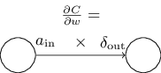
식
(32)
$\begin{eqnarray} \frac{\partial
C}{\partial w} = a_{\rm in} \delta_{\rm out} \nonumber\end{eqnarray}$
의 결과를 보면
활성화 $a_{\rm in}$이 아주 작은 값, 즉 $a_{\rm in} \approx 0$이면 그래디언트gradient항 $\partial C / \partial w$ 또한 작아지는 경향이 있다.
이러한 경우 가중치를 느리게 학습한다 learns slowly고 말하며, 이는 경사 하강동안 가중치가 많이 바뀌지 않는다는 뜻이다.
즉
(BP4)
$\begin{eqnarray}
\frac{\partial C}{\partial w^l_{jk}} = a^{l-1}_k \delta^l_j \nonumber\end{eqnarray}$
의
결론는 낮은 활성화low-activation 뉴런에서 나오는 가중치는 느리게 학습된다는 것이다.
(BP1) $\begin{eqnarray} \delta^L_j = \frac{\partial C}{\partial a^L_j} \sigma'(z^L_j) \nonumber\end{eqnarray}$ - (BP4) $\begin{eqnarray} \frac{\partial C}{\partial w^l_{jk}} = a^{l-1}_k \delta^l_j \nonumber\end{eqnarray}$ 에서 얻을 수 있는 다른 통찰력insight이 있다. 출력 층을 한 번 살펴보자. (BP1) $\begin{eqnarray} \delta^L_j = \frac{\partial C}{\partial a^L_j} \sigma'(z^L_j) \nonumber\end{eqnarray}$ 에서 $\sigma'(z^L_j)$을 고려해보자. 1장에서 본 시그모이드 함수의 그래프를 다시 생각해보면, $\sigma(z^L_j)$이 $0$ 또는 $1$에 가까울 때 $\sigma$함수는 편평flat해진다. 이러한 경우 $\sigma'(z^L_j) \approx 0$이 된다. 그러므로 출력 뉴런의 활성화가 낮거나($\approx 0$), 활성화가 높은($\approx 1$) 경우 마지막 층에 있는 가중치는 느리게 학습된다. 이 경우에 출력 뉴런은 포화되었다 saturated고 말하며, 그 결과 가중치 학습을 멈춘다(또는 느리게 학습된다). 출력 뉴런의 편향에 대해서도 비슷하게 성립한다.
초기 층earlier layers에 대해서도 비슷한 통찰을 얻을 수 있다.
특히
(BP2)
$\begin{eqnarray}
\delta^l = ((w^{l+1})^T \delta^{l+1}) \odot \sigma'(z^l) \nonumber\end{eqnarray}$
에서
$\sigma'(z^l)$에 주의하자.
뉴런이 거의 포화되면 $\delta^l_j$는 작은 값이 될 가능성이 크다.
이는 결국 포화된 뉴런으로 들어가는 가중치는 느리게 학습된다는 의미이다.*
${w^{l+1}}^T
\delta^{l+1}$이 $\sigma'(z^l_j)$을 상쇄할 만큼 큰 값을 가지면
이 추론은 성립하지 않는다.
하지만 일반적인 경향을 이야기한 것이다.
요약하면 입력 뉴런의 활성화가 낮거나 출력 뉴런이 포화된 상태인 경우, 즉 활성화가 높거나 낮은 경우 가중치는 느리게 학습된다.
이러한 관찰이 그렇게 놀랍지는 않다.
그럼에도 불구하고 역전파 식은 뉴럴 네트워크가 학습할 때 무슨 일이 일어나는지 이해하는데 도움을 준다.
게다가 이러한 종류의 추론을 개선시킬 수 있다.
핵심적인 네 가지 식은 표준 시그모이드 함수 뿐만 아니라 어떤 활성화 함수에 대해서도 성립한다(잠시뒤 볼 것 처럼 증명은 $\sigma$의 특별한 성질을 사용하지 않기 때문이다).
그리고 이 식을 이용해 특별히 원하는 학습 성질을 갖는 활성화 함수를 설계 design할 수 있다.
한 가지 예를 들면 $\sigma'$이 항상 양수이고 $0$에 가까워지지 않는 (시그모이드가 아닌) 활성화 함수 $\sigma$를 선택한다고 가정해보자.
이를 통해 일반적인 시그모이드 뉴런이 포화될 때 발생하는 학습 둔화the slow-down of learning를 막을 수 있을 것이다.
이 책의 뒷부분에서 이렇게 수정된 활성화 함수 몇 가지를 살펴볼 것이다.
네 개의 식
(BP1)
$\begin{eqnarray}
\delta^L_j = \frac{\partial C}{\partial a^L_j} \sigma'(z^L_j) \nonumber\end{eqnarray}$
-(BP4)
$\begin{eqnarray}
\frac{\partial C}{\partial w^l_{jk}} = a^{l-1}_k \delta^l_j \nonumber\end{eqnarray}$
을
기억해두면 왜 수정했는지, 어떠한 영향이 있는지 설명하는데 도움이 된다.
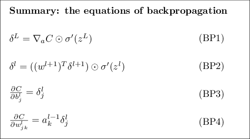
역전파 식을 대체하는 표현 Alternate presentation of the equations of backpropagation: 아다마르 곱을 이용해 역전파 식을 설명했다(특히 (BP1) $\begin{eqnarray} \delta^L_j = \frac{\partial C}{\partial a^L_j} \sigma'(z^L_j) \nonumber\end{eqnarray}$ 과 (BP2) $\begin{eqnarray} \delta^l = ((w^{l+1})^T \delta^{l+1}) \odot \sigma'(z^l) \nonumber\end{eqnarray}$ 에 주목하자). 아마다르 곱에 익숙하지 않으면 이 표현이 와닿지 않을 수 있다. 아마다르 곱이 아닌 행렬 곱셈matrix multiplication으로 설명하는 방식도 있다. (1) (BP1) $\begin{eqnarray} \delta^L_j = \frac{\partial C}{\partial a^L_j} \sigma'(z^L_j) \nonumber\end{eqnarray}$ 을 다음과 같이 쓸 수 있음을 보여라. $$\begin{eqnarray} \delta^L = \Sigma'(z^L) \nabla_a C, \tag{33}\end{eqnarray}$$ 여기서 $\Sigma'(z^L)$은 정사각행렬square matrix이며, 대각선 원소diagonal entries는 $\sigma'(z^L_j)$이고 대각선을 제외한 원소off-diagonal entries는 $0$이다. 이 행렬은 행렬 곱셈으로 $\nabla_a C$에 영향을 준다. (2) (BP2) $\begin{eqnarray} \delta^l = ((w^{l+1})^T \delta^{l+1}) \odot \sigma'(z^l) \nonumber\end{eqnarray}$ 를 다음과 같이 쓸 수 있음을 보여라. $$\begin{eqnarray} \delta^l = \Sigma'(z^l) (w^{l+1})^T \delta^{l+1}. \tag{34}\end{eqnarray}$$ (3) 위의 관찰 (1)과 (2)를 합쳐 다음 식이 성립함을 보여라. $$\begin{eqnarray} \delta^l = \Sigma'(z^l) (w^{l+1})^T \ldots \Sigma'(z^{L-1}) (w^L)^T \Sigma'(z^L) \nabla_a C \tag{35}\end{eqnarray}$$ 행렬 곱셈에 익숙한 독자들은 (BP1) $\begin{eqnarray} \delta^L_j = \frac{\partial C}{\partial a^L_j} \sigma'(z^L_j) \nonumber\end{eqnarray}$ 과 (BP2) $\begin{eqnarray} \delta^l = ((w^{l+1})^T \delta^{l+1}) \odot \sigma'(z^l) \nonumber\end{eqnarray}$ 보다 이 식을 이해하는 것이 쉬울 것이다. (BP1) $\begin{eqnarray} \delta^L_j = \frac{\partial C}{\partial a^L_j} \sigma'(z^L_j) \nonumber\end{eqnarray}$ 과 (BP2) $\begin{eqnarray} \delta^l = ((w^{l+1})^T \delta^{l+1}) \odot \sigma'(z^l) \nonumber\end{eqnarray}$ 를 중심으로 설명한 이유는 수치적으로 더 빨리 구현할 수 있기 때문이다.
이제, 핵심적인 네 개의 식 (BP1) $\begin{eqnarray} \delta^L_j = \frac{\partial C}{\partial a^L_j} \sigma'(z^L_j) \nonumber\end{eqnarray}$ -(BP4) $\begin{eqnarray} \frac{\partial C}{\partial w^l_{jk}} = a^{l-1}_k \delta^l_j \nonumber\end{eqnarray}$ 을 증명해보자. 네 개의 식 모두 다변수 미적분학의 연쇄법칙chain rule 결과이다. 연쇄법칙에 익숙하다면 계속 읽기 전에 스스로 유도해보는 것을 추천한다.
식 (BP1) $\begin{eqnarray} \delta^L_j = \frac{\partial C}{\partial a^L_j} \sigma'(z^L_j) \nonumber\end{eqnarray}$ 을 먼저 살펴보자. 이는 출력 오차 $\delta^L$에 대한 식이다. 이 식을 증명하기 위해 다음과 같은 정의를 이용한다. $$\begin{eqnarray} \delta^L_j = \frac{\partial C}{\partial z^L_j}. \tag{36}\end{eqnarray}$$ 연쇄법칙을 적용하여 위의 편도함수를 출력 활성화에 대한 편도함수로 다음고 같이 쓸 수 있다. $$\begin{eqnarray} \delta^L_j = \sum_k \frac{\partial C}{\partial a^L_k} \frac{\partial a^L_k}{\partial z^L_j}, \tag{37}\end{eqnarray}$$ 여기서 시그마$\Sigma$는 출력 층에 있는 모든 뉴런 $k$에 대한 합이다. 물론 $k$번째 뉴런의 출력 활성화 $a^L_k$은 $k = j$일 때 $j$번째 뉴런에 대한 가중치 입력weighted input $z^L_j$에 따라 달라진다. 그러므로 $k \neq j$일 때 $\partial a^L_k / \partial z^L_j$은 사라진다. 그 결과 위 식을 다음과 같이 간단히 나타낼 수 있다. $$\begin{eqnarray} \delta^L_j = \frac{\partial C}{\partial a^L_j} \frac{\partial a^L_j}{\partial z^L_j}. \tag{38}\end{eqnarray}$$ $a^L_j = \sigma(z^L_j)$이므로, 우변에 있는 두 번째 항을 $\sigma'(z^L_j)$로 다음과 같이 쓸 수 있다. $$\begin{eqnarray} \delta^L_j = \frac{\partial C}{\partial a^L_j} \sigma'(z^L_j), \tag{39}\end{eqnarray}$$ 이 식은 단지 (BP1) $\begin{eqnarray} \delta^L_j = \frac{\partial C}{\partial a^L_j} \sigma'(z^L_j) \nonumber\end{eqnarray}$ 을 원소 형태component form로 쓴 것이다.
다음으로, 오차 $\delta^l$에 대한 식을 다음 층의 오차 $\delta^{l+1}$의 항으로 나타낼 수 있는 (BP2) $\begin{eqnarray} \delta^l = ((w^{l+1})^T \delta^{l+1}) \odot \sigma'(z^l) \nonumber\end{eqnarray}$ 를 증명해보자. 증명하기 위해 $\delta^l_j = \partial C / \partial z^l_j$을 $\delta^{l+1}_k = \partial C / \partial z^{l+1}_k$에 대한 식으로 쓰고자 한다. 연쇄법칙을 이용하면 다음과 같이 쓸 수 있다. $$\begin{eqnarray} \delta^l_j & = & \frac{\partial C}{\partial z^l_j} \tag{40}\\ & = & \sum_k \frac{\partial C}{\partial z^{l+1}_k} \frac{\partial z^{l+1}_k}{\partial z^l_j} \tag{41}\\ & = & \sum_k \frac{\partial z^{l+1}_k}{\partial z^l_j} \delta^{l+1}_k, \tag{42}\end{eqnarray}$$ 마지막 줄에서 우변에 있는 두 개의 항을 서로 바꾸고, $\delta^{l+1}_k$은 정의로 치환했다. 마지막 줄의 첫 번째 항을 계산하기 위해 다음 식을 이용하자. $$\begin{eqnarray} z^{l+1}_k = \sum_j w^{l+1}_{kj} a^l_j +b^{l+1}_k = \sum_j w^{l+1}_{kj} \sigma(z^l_j) +b^{l+1}_k. \tag{43}\end{eqnarray}$$ 미분하면 다음 식을 얻을 수 있다. $$\begin{eqnarray} \frac{\partial z^{l+1}_k}{\partial z^l_j} = w^{l+1}_{kj} \sigma'(z^l_j). \tag{44}\end{eqnarray}$$ 식 (42) $\begin{eqnarray} & = & \sum_k \frac{\partial z^{l+1}_k}{\partial z^l_j} \delta^{l+1}_k \nonumber\end{eqnarray}$ 에 대입하여 다음 식을 얻는다. $$\begin{eqnarray} \delta^l_j = \sum_k w^{l+1}_{kj} \delta^{l+1}_k \sigma'(z^l_j). \tag{45}\end{eqnarray}$$ 이는 단지 원소 형태component form로 쓰여진 (BP2) $\begin{eqnarray} \delta^l = ((w^{l+1})^T \delta^{l+1}) \odot \sigma'(z^l) \nonumber\end{eqnarray}$ 이다.
증명하고자 하는 나머지 두 개의 식은 (BP3) $\begin{eqnarray} \frac{\partial C}{\partial b^l_j} = \delta^l_j \nonumber\end{eqnarray}$ 와 (BP4) $\begin{eqnarray} \frac{\partial C}{\partial w^l_{jk}} = a^{l-1}_k \delta^l_j \nonumber\end{eqnarray}$ 이다. 이 식도 연쇄법칙을 이용해 비슷한 방법으로 증명할 수 있다. 이는 예제로 남겨두겠다.
역전파의 핵심적인 네 개의 식을 증명했다. 증명은 다소 복잡해 보일 수도 있지만 단지 연쇄 법칙을 적용한 결과일 뿐이다. 우리는 역전파를 다변수 미적분학의 연쇄법칙을 체계적으로 적용해 비용 함수의 그래디언트gradient 계산하는 방법으로 생각할 수 있다. 이게 정말 역전파의 모든 것이며 나머지는 세부적인 사항에 불과하다.
역전파 식은 비용 함수의 그래디언트gradient를 계산하는 방법을 제공해 준다. 이를 알고리즘의 형태로 쓰면 다음과 같다.
알고리즘을 살펴보면, 왜 역전파 backpropagation라 부르는지 알 수 있다. 마지막 층에서 부터 오차 벡터 $\delta^l$을 역으로backward 계산한다. 뉴럴 네트워크를 역으로backward 이동하는 것이 이상해 보일 수 있다. 하지만 역전파의 증명을 생각해보면, 역으로 이동하는 것은 비용이 뉴럴 네트워크의 출력에 대한 함수라는 사실의 결과이다. 비용이 이전의 가중치와 편향에 의해 어떻게 변하는지 이해하려면, 사용할 수 있는 식을 얻을 때까지 층을 역으로 이동하면서 반복해서 연쇄법칙을 적용해야 한다.
위에서 설명한 것처럼 역전파 알고리즘은 하나의 학습 데이터에 대한 비용 함수 $C = C_x$의 그래디언트gradient를 계산한다. 실제로 많은 학습 데이터에 대한 그래디언트gradient를 계산하는 통계적 경사 하강 같은 학습 알고리즘과 역전파를 결합하여 사용한다. 특히 $m$개의 학습 데이터로 미니 배치mini-batch가 주어지면, 아래의 알고리즘은 미니 배치를 기반으로 경사 하강 학습 단계gradient descent learning step를 적용한다.
물론 통계적 경사 하강법을 구현할 때, 학습 데이터에 대한 미니 배치를 만드는 외부 루프outer loop가 필요하다. 그리고 외부 루프는 에폭epoch마다 반복된다. 알고리즘을 간결하게 나타내기 위해 이 부분은 생략하였다.
역전파를 개략적으로 이해했으므로 이제 1장에서 역전파를 구현하기 위해 사용한 코드를 이해할 수 있다.
1장의 내용을 다시 떠올려 보면, 코드는 Network 클래스에 update_mini_batch와 backprop 메소드에 포함되어 있다.
이 메소드에 있는 코드가 위에서 설명한 알고리즘을 직접 구현한 것이다.
특히 update_mini_batch메소드는 학습 데이터의 현재 mini_batch에 대한 그래디언트gradient를 계산하여 Network의 가중치와 편향을 업데이트 한다.
class Network(object):
...
def update_mini_batch(self, mini_batch, eta):
"""하나의 미니 배치에 대해 역전파를 이용한 경사 하강법을 적용해
네트워크의 가중치와 편향을 업데이트 한다.
"미니 배치"는 튜플 "(x, y)"의 리스트이고,
"eta"는 학습률이다."""
nabla_b = [np.zeros(b.shape) for b in self.biases]
nabla_w = [np.zeros(w.shape) for w in self.weights]
for x, y in mini_batch:
delta_nabla_b, delta_nabla_w = self.backprop(x, y)
nabla_b = [nb+dnb for nb, dnb in zip(nabla_b, delta_nabla_b)]
nabla_w = [nw+dnw for nw, dnw in zip(nabla_w, delta_nabla_w)]
self.weights = [w-(eta/len(mini_batch))*nw
for w, nw in zip(self.weights, nabla_w)]
self.biases = [b-(eta/len(mini_batch))*nb
for b, nb in zip(self.biases, nabla_b)]
편도함수 $\partial C_x / \partial b^l_j$과 $\partial C_x / \partial w^l_{jk}$을 계산하기 위해 backprop메소드를 사용하는 delta_nabla_b, delta_nabla_w = self.backprop(x, y) 줄에서 대부분의 일을 수행한다.
backprop메소드는 이전 절에 있는 알고리즘을 구현한 것이다.
뉴럴 네트워크의 층에 대한 인덱스를 약간 다른 방법으로 표현해서 구현하였다.
파이썬의 특징을 이용하기 위해 인덱스 표현 방법을 약간 바꿨다.
파이썬에서는 리스트의 끝에서 역으로 세기 위해 음수로 리스트 인덱스를 사용한다.
예를 들어 [-3]은 리스트의 끝에서 세 번째에 위치한 원소를 의미한다.
backprop에 대한 코드는 아래에 있으며, $\sigma$함수, 도함수 $\sigma'$, 비용 함수의 도함수를 계산하는 몇 개의 함수를 함께 구현하여 사용한다.
이것들을 포함한 코드를 혼자서 이해할 수 있어야 한다.
이해되지 않는 부분이 있다면 코드에 대해 설명한 1장의 내용을 참고하면 된다.
class Network(object):
...
def backprop(self, x, y):
"""비용 함수 C_x 에 대한 그래디언트를 나타내는 튜플 ``(nabla_b, nabla_w)`` 를
반환한다. ``nabla_b`` 와 ``nabla_w`` 는 층 사이의 numpy 배열 리스트이며,
``self.biases`` , ``self.weights``와 비슷한 형태이다."""
nabla_b = [np.zeros(b.shape) for b in self.biases]
nabla_w = [np.zeros(w.shape) for w in self.weights]
# 피드포워드(feedforward)
activation = x
activations = [x] # 층 사이의 모든 활성화를 저장하는 리스트
zs = [] # 층 사이의 모든 z 벡터를 저장하는 리스트
for b, w in zip(self.biases, self.weights):
z = np.dot(w, activation)+b
zs.append(z)
activation = sigmoid(z)
activations.append(activation)
# 백워드 패스(backward pass)
delta = self.cost_derivative(activations[-1], y) * \
sigmoid_prime(zs[-1])
nabla_b[-1] = delta
nabla_w[-1] = np.dot(delta, activations[-2].transpose())
# 아래의 반복문에서 변수 l은
# 책의 2장에서 사용한 표기법과 약간 다르게 사용된다.
# 여기서 l = 1은 뉴런의 마지막 층을 의미하고,
# l = 2는 마지막에서 두 번째 층을 의미한다.
# 이는 책에서 사용한 설계에 다시 번호를 붙인 것이며,
# 파이썬은 리스트에서 음수 인덱스를 이용할 수 있다는 사실을
# 이용하기 위함이다.
for l in xrange(2, self.num_layers):
z = zs[-l]
sp = sigmoid_prime(z)
delta = np.dot(self.weights[-l+1].transpose(), delta) * sp
nabla_b[-l] = delta
nabla_w[-l] = np.dot(delta, activations[-l-1].transpose())
return (nabla_b, nabla_w)
...
def cost_derivative(self, output_activations, y):
"""출력 활성화에 대한 편도함수 \partial C_x /
\partial a 의 벡터를 반환한다."""
return (output_activations-y)
def sigmoid(z):
"""시그모이드 함수."""
return 1.0/(1.0+np.exp(-z))
def sigmoid_prime(z):
"""시그모이드 함수의 도함수."""
return sigmoid(z)*(1-sigmoid(z))
미니 배치를 통한 역전파에 대한 완전한 행렬 기반 접근 방식 fully matrix-based approach to backpropagation over a mini-batch
우리는 확률적 경사 하강법을 구현할 때 미니 배치에 있는 학습 데이터에 대해 반복문을 사용하였다.
역전파 알고리즘을 수정하여 미니 배치에서 모든 학습 데이터에 대해 동시에 그래디언트gradient를 계산하도록 만들 수 있다.
하나의 입력 벡터 $x$로 시작하는 대신, 각 열이 미니 배치에 있는 벡터인 행렬 $X = [x_1 x_2 \ldots x_m]$로 시작하면 된다.
가중치 행렬을 곱하고, 편향에 대한 적절한 행렬을 더하고, 모든 곳에 시그모이드 함수를 적용해 앞으로 전달forward-propagate할 수 있다.
비슷한 선을 따라서 역전파backpropagate한다.
역전파 알고리즘에 대한 이 접근법을 의사코드로 작성해라.
이 완전한 행렬 기반 접근방식을 사용하도록 network.py를 수정해라.
이 접근 방식의 장점은 선형 대수학에 대한 현대적인 라이브러리를 이용한다는 점이다.
그 결과 미니 배치를 반복하는 것보다 빠르게 동작할 수 있다.
(예를 들어 내가 가지고 있는 노트북에서 MNIST에 대해 동작할 때 속도는 약 2배 빨라진다.)
실제로 역전파에 대한 모든 라이브러리는 이 완전한 행렬 기반 접근 방식을 이용하거나 약간 변형해서 사용한다.
어떤 점에서 역전파는 빠른 알고리즘일까? 질문에 답하기 위해 그래디언트gradient를 계산하는 또 다른 접근 방식을 생각해보자. 뉴럴 네트워크 연구가 막 시작된 시기라고 상상해보자. 아마도 1950년대나 1960년대 즈음일 것이다. 당신은 경사 하강법을 이용한 학습을 생각한 최초의 사람이다! 하지만 생각을 실현시키기 위해서는 비용 함수의 그래디언트gradient를 계산할 방법이 필요하다. 당신은 미적분학 지식을 바탕으로 그래디언트gradient를 계산하기 위해 연쇄법칙을 사용할 수 있는지 알아보기로 결정했다. 하지만 당신은 곧 수식이 복잡하다는 것을 알고 좌절에 빠지고 만다. 그래서 다른 방식을 찾으려고 시도한다. 비용을 가중치에 대한 함수 $C = C(w)$로 생각하기로 결정한다(잠시뒤 편향에 대해 다룰 것이다). 가중치에 번호를 매겨 $w_1, w_2, \ldots$로 나타내고, 어떤 가중치 $w_j$에 대해 $\partial C / \partial w_j$을 계산하고자 한다. 이를 계산하는 명확한 방법은 다음과 같은 근사식을 사용하는 것이다. $$\begin{eqnarray} \frac{\partial C}{\partial w_{j}} \approx \frac{C(w+\epsilon e_j)-C(w)}{\epsilon}, \tag{46}\end{eqnarray}$$ 여기서 $\epsilon > 0$은 작은 양수이고, $e_j$는 $j$ 방향의 단위 벡터이다. 즉 두 개의 약간 다른 값 $w_j$에 대한 비용 $C$를 계산한 다음, 식 (46) $\begin{eqnarray} \frac{\partial C}{\partial w_{j}} \approx \frac{C(w+\epsilon e_j)-C(w)}{\epsilon} \nonumber\end{eqnarray}$ 을 적용하여 $\partial C / \partial w_j$을 추정할 수 있다. 같은 아이디어로 편향에 대한 편도함수 $\partial C / \partial b$을 계산할 것이다.
이 방식은 매우 좋아 보인다. 이는 개념적으로 간단하며, 단지 몇 줄의 코드로 쉽게 구현할 수 있다. 그래디언트gradient를 계산하기 위해 연쇄법칙을 사용하는 아이디어보다 훨씬 좋아보인다.
이 접근 방식은 좋아 보이지만 실제 코드로 구현하면 매우 느리게 동작한다. 왜 그럴까? 뉴럴 네트워크에 수 백만 개의 가중치가 있다고 상상해보자. 그러면 개별 가중치 $w_j$에 대한 $\partial C / \partial w_j$을 계산하기 위해 $C(w+\epsilon e_j)$을 계산해야 한다. 즉 그래디언트gradient를 계산하기 위해 비용 함수를 수 백만 번 계산해야 하며, 뉴럴 네트워크을 통해 (학습 데이터마다) 수 백만 번 앞으로 전달forward-pass해야 한다. $C(w)$ 또한 계산해야 하며, 결국 뉴럴 네트워크을 통해 수 백만 번과 한 번을 통과pass해야 한다.
역전파가 기발한 아이디어인 이유는 뉴럴 네트워크을 통해 단 한번 앞으로 전달한 후, 한 번 뒤로 전달하여 모든 편도함수 $\partial C / \partial w_j$을 동시에 계산하기 때문이다.
대략적으로, 뒤로 전달backward pass하는 계산 비용은 앞으로 전달forward pass*
그럴듯 하지만, 신중하게 말하기 위해 약간의 분석이 필요하다.
백워드 패스backward pass에서는 가중치 행렬의 전치 행렬을 곱하지만
포워드 패스forward pass에서의 지배적인 계산 비용은 가중치 행렬을 곱셈하는 것이므로
이는 그럴듯 하다.
이 연산은 비슷한 계산 비용을 가진다.
하는 비용과 거의 같다.
그러므로 역전파의 전체 비용은 뉴럴 네트워크에서 포워드 패스를 두 번하는 것과 비슷하다.
이것과 식
(46)
$\begin{eqnarray} \frac{\partial
C}{\partial w_{j}} \approx \frac{C(w+\epsilon
e_j)-C(w)}{\epsilon} \nonumber\end{eqnarray}$
을
바탕으로 한 접근 방식에서 필요한 백만 번과 한 번의 포워드 패스를 비교해보자.
겉보기에는 역전파가 식
(46)
$\begin{eqnarray} \frac{\partial
C}{\partial w_{j}} \approx \frac{C(w+\epsilon
e_j)-C(w)}{\epsilon} \nonumber\end{eqnarray}$
을 바탕으로 한 접근 방식보다 복잡해 보이지만, 실제로 역전파가 훨씬 더 빠르다.
이 속도는 1986년에 처음으로 완전히 달성했으며, 뉴럴 네트워크가 풀 수 있는 문제의 범위를 상당히 넓혔다. 그에 따라 뉴럴 네트워크를 사용하는 사람들이 많아졌다. 물론, 역전파가 만병통치약은 아니다. 1980년대 후반에 사람들은 역전파를 이용해 딥 뉴럴 네트워크deep neural networks, 즉 은닉층이 많은 뉴럴 네트워크을 학습시킬 때 한계에 부딪쳤다. 이 책의 뒷부분에서 현대 컴퓨터와 새로운 아이디어가 어떻게 역전파를 이용해 딥 뉴럴 네트워크를 학습시킬 수 있는지 살펴볼 것이다.
앞에서 설명했듯이, 역전파는 두 가지 미스테리를 가지고 있다. 첫 번째, 이 알고리즘이 실제로 무엇을 하는걸까? 우리는 출력에서 역전파되는 오차에 대해 살펴보았다. 하지만 모든 행렬과 벡터 곱셈을 할 때, 무슨 일이 일어나는지 더 깊이 이해를 할 수 있을까? 두 번째 미스테리는 역전파를 처음에 어떻게 발견했냐는 것이다. 알고리즘을 단계별로 따라가는 것과 알고리즘이 동작하는 방식에 대한 증명을 따라가는 것은 결국 같은 일이다. 하지만 당신이 문제를 잘 이해한다고 해서 알고리즘을 처음으로 발견할 수 있는 것은 아니다. 역전파 알고리즘을 발견할 수 있도록 이끄는 그럴듯한 추론 과정이 있을까? 이번 절에서는 위의 두 가지 미스테리에 대해 다룰 것이다.
알고리즘이 무엇을 하는지에 대한 직관력을 기르기 위해 뉴럴 네트워크의 가중치 $w^l_{jk}$에 작은 변화 $\Delta w^l_{jk}$를 가한다고 생각해보자.
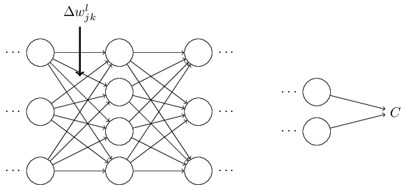
가중치에서의 변화는 상응하는 뉴런의 출력 활성화를 변화시킬 것이다.
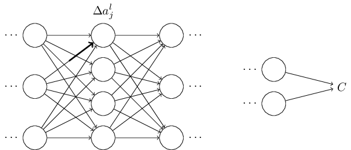
그런 다음, 차례로 다음 층에 있는 모든 활성화에 변화를 줄 것이다.
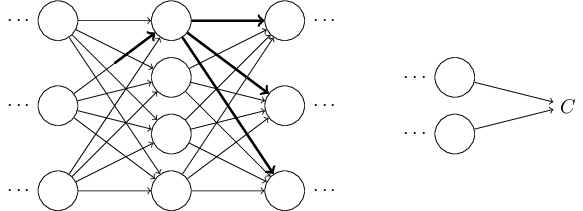
이 변화는 결국 다음 층을 변화시키고, 그 다음 층을 계속 변화시켜 마지막 층에서 변화를 일으키며, 마지막으로 비용 함수를 변화시킨다.
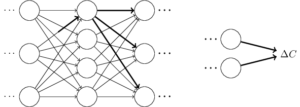
다음 식에 의해 비용의 변화량 $\Delta C$는 가중치의 변화량 $\Delta w^l_{jk}$과 연관된다.
$$\begin{eqnarray}
\Delta C \approx \frac{\partial C}{\partial w^l_{jk}} \Delta w^l_{jk}.
\tag{47}\end{eqnarray}$$
위 식은 $w^l_{jk}$의 작은 변화가 전파되어 어떻게 $C$를 변화시키는지 신중하게 따라가보는 것이 $\frac{\partial C}{\partial w^l_{jk}}$을 계산하는 방법이라는 의미이다.
쉽게 계산할 수 있는 양에 대해 모든 것을 신중하게 표현할 수 있다면, $\partial C / \partial w^l_{jk}$을 계산할 수 있을 것이다.
한 번 계산해 보자.
변화량 $\Delta w^l_{jk}$은 $l$번째 층에 있는 $j$번째 뉴런의 활성화를 $\Delta a^{l}_j$만큼 변화시킨다.
이 변화량은 다음 식과 같다.
$$\begin{eqnarray}
\Delta a^l_j \approx \frac{\partial a^l_j}{\partial w^l_{jk}} \Delta w^l_{jk}.
\tag{48}\end{eqnarray}$$
활성화의 변화량 $\Delta a^l_{j}$은 다음 층인 $(l+1)$번째 층에 있는 모든 활성화를 변화시킨다.
예를 들어 이 활성화 중 하나인 $a^{l+1}_q$를 중점적으로 살펴보자.
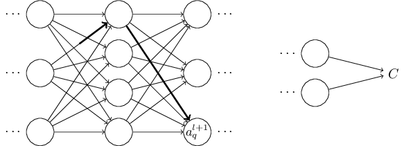
사실 이는 다음과 같이 변화시킨다:
$$\begin{eqnarray}
\Delta a^{l+1}_q \approx \frac{\partial a^{l+1}_q}{\partial a^l_j} \Delta a^l_j.
\tag{49}\end{eqnarray}$$
식
(48)
$\begin{eqnarray}
\Delta a^l_j \approx \frac{\partial a^l_j}{\partial w^l_{jk}} \Delta w^l_{jk} \nonumber\end{eqnarray}$
을 대입하면 다음과 같다.
$$\begin{eqnarray}
\Delta a^{l+1}_q \approx \frac{\partial a^{l+1}_q}{\partial a^l_j} \frac{\partial a^l_j}{\partial w^l_{jk}} \Delta w^l_{jk}.
\tag{50}\end{eqnarray}$$
물론, 변화량 $\Delta a^{l+1}_q$은 결국 다음 층에 있는 활성화를 변화시킨다.
사실, $w^l_{jk}$에서 $C$까지 네트워크를 따라가면서, 활성화의 각 변화량이 그 다음 활성화를 변화시키고, 결국 출력에 있는 비용을 변화시키는 경로를 생각해 볼 수 있다.
경로가 활성화 $a^l_j, a^{l+1}_q, \ldots, a^{L-1}_n, a^L_m$을 따라 지나간다면, 결과 식은 다음과 같다.
$$\begin{eqnarray}
\Delta C \approx \frac{\partial C}{\partial a^L_m}
\frac{\partial a^L_m}{\partial a^{L-1}_n}
\frac{\partial a^{L-1}_n}{\partial a^{L-2}_p} \ldots
\frac{\partial a^{l+1}_q}{\partial a^l_j}
\frac{\partial a^l_j}{\partial w^l_{jk}} \Delta w^l_{jk},
\tag{51}\end{eqnarray}$$
즉 우리가 지나가는 경로에서 각각의 추가적인 뉴런에 대해 $\partial a / \partial a$형태의 항term을 사용하고, 마지막에 $\partial C/\partial a^L_m$ 항을 사용한다.
이는 뉴럴 네트워크의 특정한 경로에 있는 활성화의 변화 때문에 $C$가 변한다는 의미이다.
물론 $w^l_{jk}$의 변화가 전달되어 비용에 영향을 주는 경로는 많이 있다.
여기서는 하나의 경로만 고려하였다.
$C$의 전체 변화를 계산하기 위해, 가중치에서 마지막 비용까지 이어지는 가능한 모든 경로를 합해야 한다.
즉 다음과 같이 식을 쓸 수 있다.
$$\begin{eqnarray}
\Delta C \approx \sum_{mnp\ldots q} \frac{\partial C}{\partial a^L_m}
\frac{\partial a^L_m}{\partial a^{L-1}_n}
\frac{\partial a^{L-1}_n}{\partial a^{L-2}_p} \ldots
\frac{\partial a^{l+1}_q}{\partial a^l_j}
\frac{\partial a^l_j}{\partial w^l_{jk}} \Delta w^l_{jk},
\tag{52}\end{eqnarray}$$
여기서, 경로에 있는 중간 뉴런에 대한 가능한 모든 선택을 합한 것이다.
식
(47)
$\begin{eqnarray}
\Delta C \approx \frac{\partial C}{\partial w^l_{jk}} \Delta w^l_{jk} \nonumber\end{eqnarray}$
과 비교해보면 다음과 같다.
$$\begin{eqnarray}
\frac{\partial C}{\partial w^l_{jk}} = \sum_{mnp\ldots q} \frac{\partial C}{\partial a^L_m}
\frac{\partial a^L_m}{\partial a^{L-1}_n}
\frac{\partial a^{L-1}_n}{\partial a^{L-2}_p} \ldots
\frac{\partial a^{l+1}_q}{\partial a^l_j}
\frac{\partial a^l_j}{\partial w^l_{jk}}.
\tag{53}\end{eqnarray}$$
식
(53)
$\begin{eqnarray}
\frac{\partial C}{\partial w^l_{jk}} = \sum_{mnp\ldots q} \frac{\partial C}{\partial a^L_m}
\frac{\partial a^L_m}{\partial a^{L-1}_n}
\frac{\partial a^{L-1}_n}{\partial a^{L-2}_p} \ldots
\frac{\partial a^{l+1}_q}{\partial a^l_j}
\frac{\partial a^l_j}{\partial w^l_{jk}} \nonumber\end{eqnarray}$
은 복잡해보이지만 직관적으로 아주 좋은 해석을 할 수 있다.
우리는 네트워크에서 가중치에 대한 $C$의 변화율을 계산하려 한다.
위 식이 말하고자 하는 바는 뉴럴 네트워크에서 두 뉴런 사이의 모든 선edge은 다른 뉴런의 활성화에 대한 어떤 뉴런의 활성화의 편도함수인, 비율 계수rate factor와 연관된다는 것이다.
첫 번째 가중치에서 첫 번째 뉴런으로 이어지는 선edge은 비율 계수 $\partial a^{l}_j / \partial w^l_{jk}$을 가진다.
경로에 대한 비율 계수는 단지 경로에 있는 비율 계수들의 곱이다.
그리고 전체 변화율 $\partial C / \partial w^l_{jk}$은 단지 처음에 있는 가중치에서 마지막에 위치한 비용을 따라가는 모든 경로에 대한 비율 계수들의 합이다.
이 과정을 하나의 경로에 대해 나타내 보면 아래 그림과 같다.
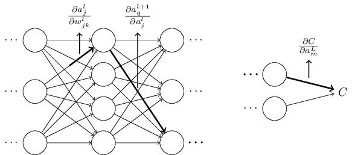
지금까지 설명한 것은 경험적인 논증heuristic argument으로, 뉴럴 네트워크에서 가중치가 바뀔 때 무슨 일이 일어나는지 살펴보았다.
이 논증을 더 발전시킬 수 있는 사고의 과정을 대략적으로 설명해 보겠다.
먼저, 식
(53)
$\begin{eqnarray}
\frac{\partial C}{\partial w^l_{jk}} = \sum_{mnp\ldots q} \frac{\partial C}{\partial a^L_m}
\frac{\partial a^L_m}{\partial a^{L-1}_n}
\frac{\partial a^{L-1}_n}{\partial a^{L-2}_p} \ldots
\frac{\partial a^{l+1}_q}{\partial a^l_j}
\frac{\partial a^l_j}{\partial w^l_{jk}} \nonumber\end{eqnarray}$
에서 모든 개별 편도함수에 대한 식을 유도할 수 있다.
미적분을 약간 이용하면 쉽게 할 수 있다.
그런 다음, 인덱스에 대해 모든 합을 행렬 곱셈으로 쓰는 방법을 알아낼 수 있다.
이는 꽤 길고 지루한 작업이라 인내심을 요하지만, 특별한 아이디어가 필요한 것은 아니다.
이 모든 것을 하고 난 다음, 가능한 간단하게 정리하면 정확히 역전파 알고리즘이 나타난다.
그러므로 역전파 알고리즘을 모든 경로에 대한 비율 계수의 합을 계산하는 방법으로 간주할 수 있다.
조금 다르게 표현해보면, 역전파 알고리즘은 네트워크를 통해 전파되어 출력에 도달한 다음 비용에 영향을 줄 때, 가중치와 편향에 대한 작은 변화를 추적할 수 있는 방법이다.
이제, 여기서는 더 이상 깊게 살펴보지 않을 것이다. 자세한 사항을 살펴보기에는 상당한 노력이 필요하며 골치아픈 일일 수 있다. 한 번 도전하고 싶으면 시도해 봐도 좋다. 그렇지 않더라도 이러한 생각을 통해 역전파 알고리즘에 대한 통찰력을 기를 수 있다.
다른 미스테리를 살펴보자-
역전파는 처음에 어떻게 발견되었을까?
사실 위에서 개략적으로 설명한 방법을 따라가면 역전파의 증명을 발견할 수 있을 것이다.
하지만 증명은 이 장의 앞부분에서 설명한 것보다 꽤 길고 복잡하다.
그렇다면 (미스테리하지만) 그렇게 짧은 증명을 어떻게 발견하였을까?
긴 증명을 자세히 모두 써보면, 간소화할 수 있는 부분들이 몇 개 보일 것이다.
간소화할 수 있는 부분을 고쳐 더 짧아진 증명을 써보면, 더 간소화할 수 있는 부분들이 보일 것이다.
이렇게 이 과정을 반복해 볼 수 있다.
몇 번 반복하다 보면, 처음에 봤던 짧지만 다소 모호한 증명이 나온다.*
아이디어 하나가 필요하다.
식 (53)에서 중간 변수는 $a_q^{l+1}$과 같은 활성화이다.
$z^{l+1}_q$와 같은 가중치 입력을 중간 변수로 바꾸어 사용하는 아이디어다.
이러한 아이디어를 쓰지 않으면 활성화 $a_q^{l+1}$을 계속 사용해야 하며
얻을 수 있는 증명은 이 장의 초기에 주어진 증명보다 다소 복잡해진다.
물론 초기 증명의 기원에 대해 미스테리한 점은 없다.
이번 절에서 설명한, 증명을 단순화하는 작업만 있을 뿐이다.
Deep Learning, book by Ian Goodfellow, Yoshua Bengio, and Aaron Courville
한글 글꼴(korean fonts): 나눔 글꼴
In academic work,
please cite this book as: Michael A. Nielsen, "Neural Networks and
Deep Learning", Determination Press, 2015
This work is licensed under a
Creative Commons Attribution-NonCommercial 3.0 Unported License
. This means you're free to copy, share, and
build on this book, but not to sell it. If you're interested in
commercial use, please contact me(Michael A. Nielsen).
Last update: Tue Jun 11 16:58:53 2019
학업적으로 이용 시 다음과 같이 인용해 주세요: Michael A. Nielsen, "Neural Networks and
Deep Learning", Determination Press, 2015

이 저작물은
크리에이티브 커먼즈 저작자표시-비영리 3.0 Unported 라이선스
에 따라 이용할 수 있습니다.
상업적 이용을 원하면, 저자(Michael A. Nielsen)에게 연락을 주세요.